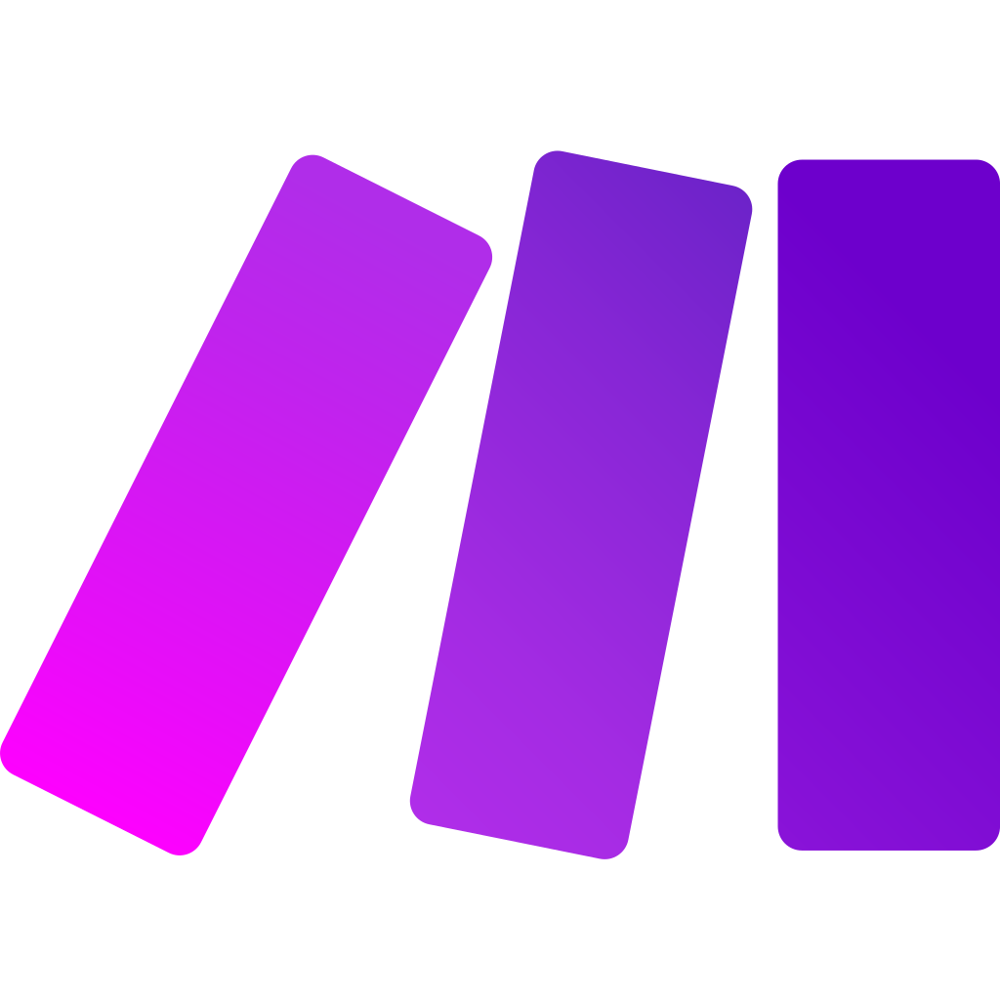

🚀 Projetos Principais
1. Planilha Avançada de Controle de Estoque para OPME
Desenvolvi uma planilha de Excel completa com dashboards, entradas e saídas automatizadas e validações inteligentes de dados. Destaques: PROCV, SEERRO, ÍNDICE, CORRESP, SOMASES e mais.
2. Automação do Sistema Tasy com Interface de Controle
Scripts com PyAutoGUI e Selenium para cadastros e emissão de relatórios, com interface gráfica via Tkinter. Leitura de Excel e CSV integrada.
3. Automação Avançada no Sistema SIAC Prime
Automatização de tarefas como impressão de etiquetas, emissão de NF, envio de e-mails e cotações. Mais de 150 notas em um dia. GUI personalizada com alta produtividade.
4. Chatbots para WhatsApp com Node.js
Chatbots personalizados com envio de documentos, áudios, vídeos e respostas inteligentes. Ideal para atendimento automático e suporte.
5. App para Instaladores de Manutenção Residencial
Aplicativo móvel desenvolvido para profissionais de manutenção residencial (ar-condicionado, máquina de lavar, geladeira, elétrica, hidráulica e outros serviços). Permite cadastro de clientes, controle de equipamentos por endereço, histórico de atendimentos e integração direta com WhatsApp para comunicação rápida e organizada.
📚 Curso em Destaque

Automação em Python para Escritório
Duração: Mais de 2 horas e meia de aulas práticas
Curso prático e direto ao ponto para quem deseja automatizar tarefas repetitivas no ambiente de trabalho, mesmo sem experiência prévia em programação.
- Automação de sistemas sem API
- Controle de mouse e teclado
- Criação de interfaces gráficas
- Envio automático de e-mails
- Manipulação de arquivos e relatórios
✅ Tech Stack
Python
Node.js
PostgreSQL
Docker
Excel
React Native
Supabase

Make
✅ Sobre Mim
Sou André Macedo Taques, desenvolvedor especializado em automação de processos e criação de soluções inteligentes para empresas que querem ganhar tempo e produtividade. Transformo tarefas repetitivas em sistemas eficientes, integrando Python, Excel avançado, APIs e bots personalizados para otimizar rotinas operacionais e reduzir erros manuais.
Tenho experiência no desenvolvimento de planilhas inteligentes, automações para sistemas sem API, integração com WhatsApp, emissão automatizada de relatórios e criação de interfaces que facilitam o dia a dia das equipes. Meu foco é entregar soluções práticas, aplicáveis e que gerem resultado real no negócio.
Atualmente, aprofundo meus estudos em Inteligência Artificial e integrações avançadas, buscando sempre evoluir tecnicamente para oferecer soluções cada vez mais estratégicas e escaláveis.
Acredito que tecnologia de verdade é aquela que resolve problemas concretos — e é exatamente isso que eu entrego em cada projeto.